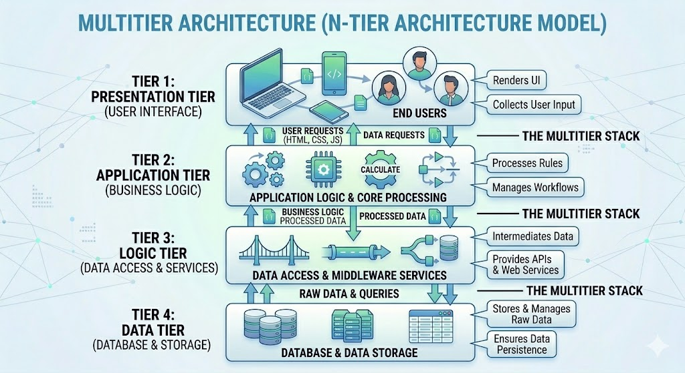

Multitier architecture is a client-server architecture that divides the application into multiple layers, each with a specific function. This approach enhances scalability, maintainability, and performance by separating the presentation layer from the business logic and data layers.
